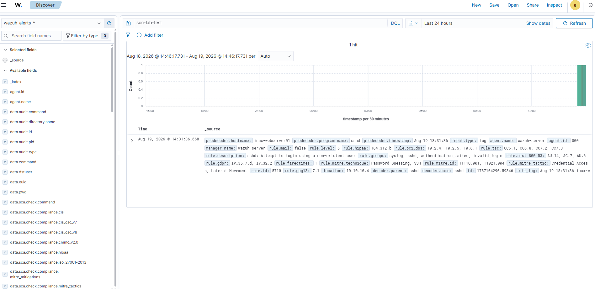
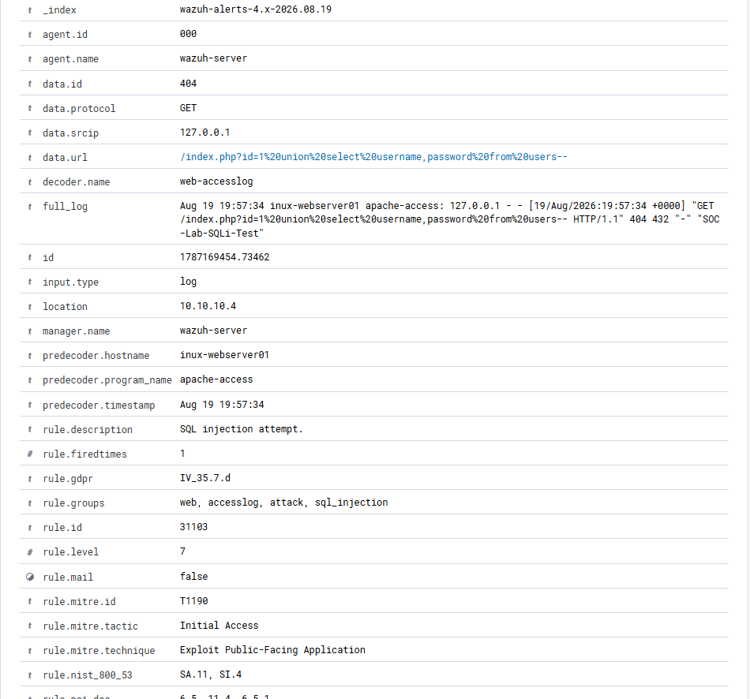
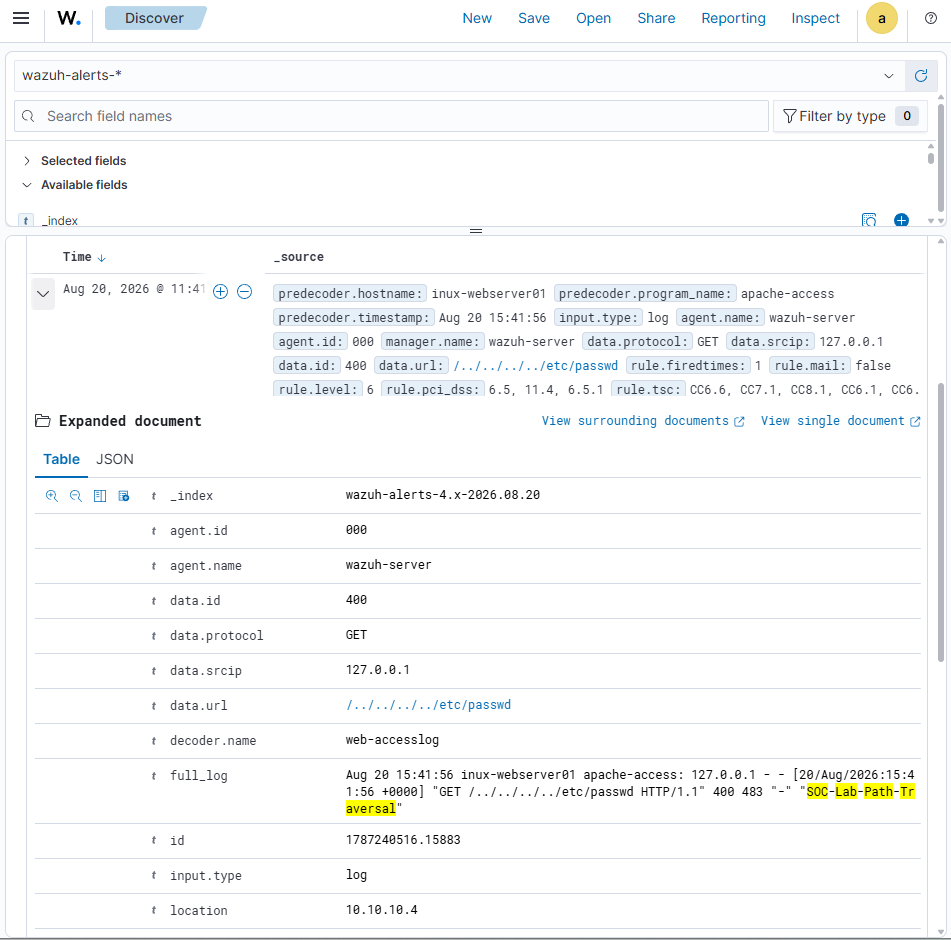
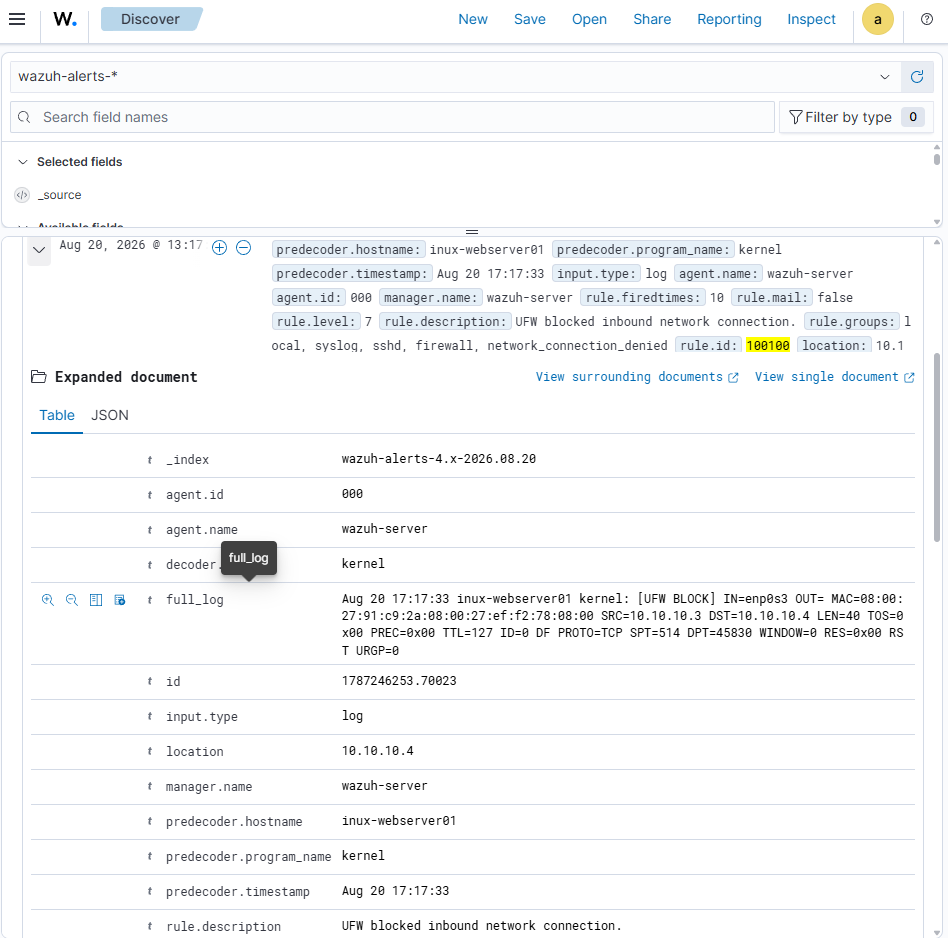
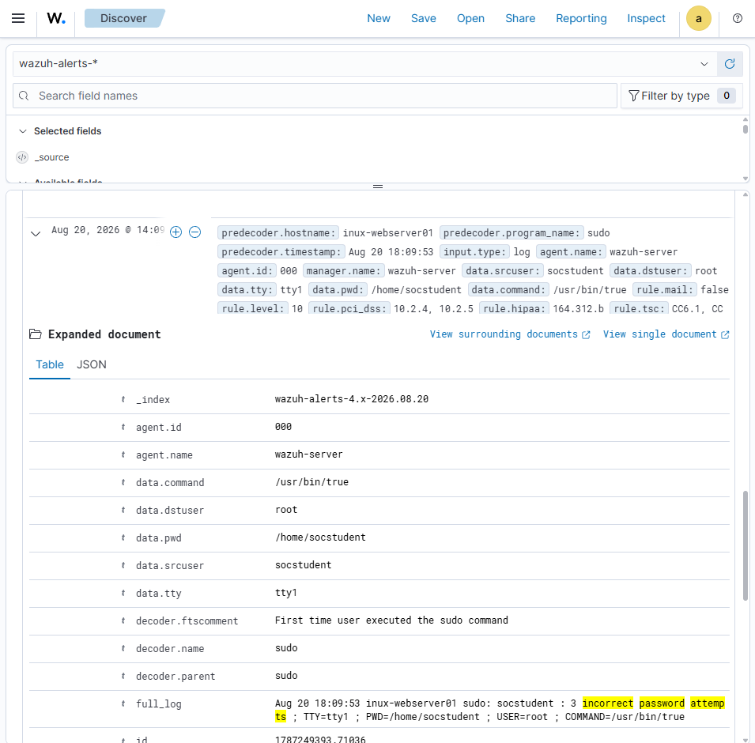

01SSH Password Guessing Detection
Generated and investigated failed SSH authentication activity in Wazuh, confirming rule 5710 and a Level 5 alert.
Read case studyCybersecurity student · SOC analyst candidate
I’m Ryan Bryant, a cybersecurity bachelor’s student building hands-on experience in alert triage, log analysis, detection engineering, and incident documentation.
Profile / 00
My home lab uses VirtualBox, Wazuh, Ubuntu Server, Apache, rsyslog, and UFW to recreate common security events in a safe, isolated environment.
Each investigation follows a repeatable SOC workflow: establish a baseline, generate controlled activity, validate the source log, locate the SIEM alert, interpret the rule and severity, map relevant MITRE ATT&CK context, and document the result.
Selected work / 01—05
Evidence-led case studies from an isolated home lab.

01Generated and investigated failed SSH authentication activity in Wazuh, confirming rule 5710 and a Level 5 alert.
Read case study
02Created a controlled SQL injection request, validated Apache telemetry, and analyzed Wazuh rule 31103 mapped to MITRE ATT&CK T1190.
Read case study
03Simulated a path traversal request in an isolated web lab and examined the resulting Level 6 common web attack alert.
Read case study
04Configured UFW controls, verified a denied TCP/8080 connection, and authored and tested a custom Wazuh detection rule.
Read case study
05Produced controlled sudo failures and investigated the Level 10 alert mapped to MITRE ATT&CK T1548.003.
Read case studyCapabilities / 06
Credentials / 07
Academic achievement and verified professional development.
Education
University of Phoenix · Expected May 2028
Academic honors
President’s List once · Dean’s List twice
Honor societies
NSLS · Epsilon Pi Tau, Delta Sigma Chapter
Professional development
Network defense, endpoint protection, threat response, and data analytics
View Credly profile ↗Analyst value / 08
Practical capabilities demonstrated through documented home-lab investigations.
Alert investigation
Analyze security alerts, validate source telemetry, and distinguish meaningful activity from routine events.
Technical analysis
Examine Linux, SSH, Apache, sudo, rsyslog, and firewall logs to identify suspicious behavior.
Detection engineering
Generate controlled security events, test Wazuh rules, interpret severity, and map findings to MITRE ATT&CK.
Communication
Produce organized case studies that explain evidence, analytical conclusions, troubleshooting, and remediation recommendations.
Methodology note / 09
These scenarios were performed by Ryan Bryant in an isolated educational home lab. OpenAI’s ChatGPT (“Sarah”) assisted with troubleshooting, explanations, and document organization. Commands were executed and results were validated by the author. Official vendor documentation is cited within the case-study reports.